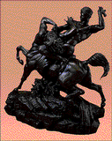

The Minneapolis Institute of Arts
Main Museum Menu
~
Educational Programs
~
Curriculum Materials
~
Teaching the Arts Catalog
Curriculum Materials:World Mythology
Introduction
~
Myth by Image
~
Myth by Culture
~
Mythological Comparisons
~
Glossary
~
Suggested Readings
~
Downloadable Resources
~
How to Order
~
Your Comments Wanted
Myths with Animal or Beast Characters
Image 4
Nigeria (Edo)
Memorial Tusk
Late 18th-early 19th century (Kingdom of Benin)
Image 6
Mali (Bamana)
Antelope Headdress
20th century

Image 10
Antoine-Louis Barye
France, 1796-1875
Theseus Slaying a Centaur
About 1855
Image 17
United States (Navajo)
Ketoh (Wrist Guard)
About 1930
Image 18
Canada (Haida)
Chief's Rattle
19th-20th century
Image 19
United States (Lakota)
Woman's Dress
20th century
Image 20
Papua New Guinea (New Ireland)
Malagan Pole
19th century
Image 22
China
Dragon Robe
19th century
Introduction
~
Myth by Image
~
Myth by Culture
~
Mythological Comparisons
~
Glossary
~
Suggested Readings
~
Downloadable Resources
~
How to Order
~
Your Comments Wanted
Main Museum Menu
~
Educational Programs
~
Curriculum Materials
~
Teaching the Arts Catalog